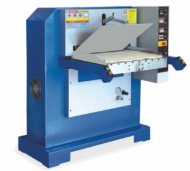
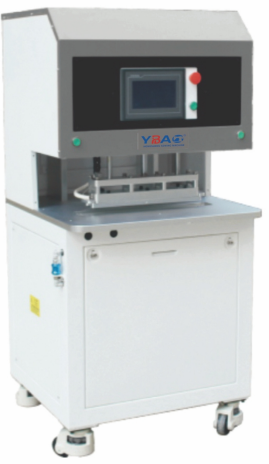
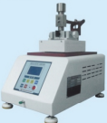
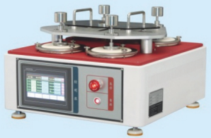
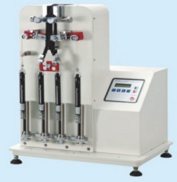
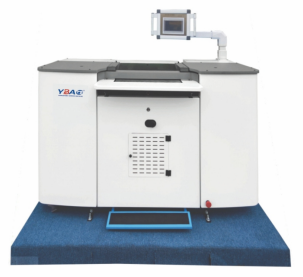
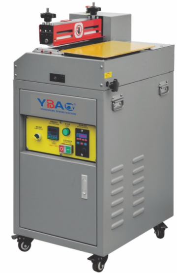

This machine uses the principle of electric heating and air pressure to make the hot melt film and the material smooth and firm.Fit, with automatic
feeding and discharging, uniform pressure, low energy consumption, high efficiency, and occupying landLess, easy to use and safe, etc., widely used in
footwear, leather goods, luggage, clothingClothing and other industries.
YL-719D
HOT MELT ADHESIVE INTERLINING LAMINATING MACHINE
YL-719D
Manual adjustment and control, the rotating structure design is more humane and convenient, the turntable is covered with a soft silicone
film,The heat of the heating plate can be used to activate the glue bonding material with the greatest benefit.
YL-005C
AUTOMATIC ROTATING OIL SIDE OVEN
YL-005C
It is suitable for the drying of bag shoulder straps, handles, jewelry leather strips, belts and other
materials after coating and coloring. It can be used for drying materials of 20cm-120cm. It has precise dualtime
control, adjustable intermittent operation, and simple operation.
YL-121
PRESSING MACHINE
YL-121
It is suitable for leather goods, handbags, footwear and other industries. The fake leather is pressed and compacted after being
laminated. Make the leather surface bright and smooth, the lower wheel is a special rubber wheel, and is equipped with frequency
conversion speed regulation, which has a good energy-saving effect.
YL-120R
BELT ROLLER EMBOSSING MACHINE
YL-120R
It is suitable for continuous imprinting and embossing of various long leathers. With mold operation, different molds can produce different
patterns. The required temperature and speed can be adjusted according to different materials, and the color and depth of the
imprinting can be controlled.
YL-120
HYDRAULIC FLAT EMBOSSING MACHINE

YL-120
Hand-push type, manual control, simple and accurate operation; refined internal parts design, the machine is more stable and reliable: handbaa feeding system is more accurate and more suitable for
mold leather embossing, high-auality stable and reliable: equipped with heating upper/lower mold leather embossing, high-quality stable and reliable; equipped with heating system
device, digital display, The temperature can be adjusted to improve the production efficiency and product quality; the time and temperature of the embossing machine are controllable, and the operation
is simple; the environmental protection equipment has low energy consumption and law noise; it is equipped with safety devices to eliminate the hidden danger of the machine to the operator; Industrial
manufacturers demand customized automatic/manual embossing machines.
YL-112
HYDRAULIC CALENDER (HEATING ROLLER)

YL-112
Suitable for leather goods, handbags, footwear and other industries. The fake leather is calendered,
and the surface surface of the leather is too bright and smooth. It is heated by the upper wheel and
the temperature temp is adjustable. The lower wheel is a special rubber wheel with hydraulic control up and down, and is
equipped with frequent speed adjustment., Good energysaving effect.
YL-112S
AIR PRESSURE CALENDER (HEATING ROLLER)
YL-112S
Suitable for leather goods, handbags, footwear and other industries. The fake leather is calendered, and the surface of the
leather is too bright and smooth. It is heated by the upper wheel and the temperature is adjustable. The lower wheel is a
special rubber wheel with hydraulic control up and down, and is equipped with frequent speed adjustment., Good energysaving effect.
YL-156
BELT EMBOSSING MACHINE
YL-156
This machine is suitable for the embossing process of producing belts. External pressure gauge makes adjustment and operation more convenient.
This machine is divided into adjustmentent mode and and workir working mode. The adjustment mode adopts jog up and down, which is more precise and
convenient. Equipped with a safety sensor, it is safer.
YL-166
BELT TRIMMING MACHINE
YL-166
It is suitable for bilateral edging, polishing and waxing of various men's and women's belts, straight belts, and back straps.This machine adopts four-wheel two-stage
edging, which improves efficiency by 50%, increases output and reduces labor
(and is equipped with variable speed dust collection equipment). Different grinding wheels can also be installed according to different needs to achieve ideal results.
YL-116E
ADVANCED SINGLE-WHEEL EDGING MACHINE
YL-116E
It is suitable for bilateral edging, polishing and waxing of various men's and women's belts, straight belts, and back straps.
YL-188
BELT PUNCHING MACHINE
YL-188
Applicable to all kinds of genuine leather, regenerated leather, leather, artificial leather, etc. Applicable to industries such as belts and shoulder
strapsThe braid is slit.
YL-139
FIVE-WHEEL DOUBLE EDGING MACHINE
YL-139
Suitable for belts, shoulder straps, entrainment, both sides can be trimmed at the same time, different tools can be replaced, such as rounded corners
beveled cornersWait, the production speed is fast.
YL-333
PNEUMATIC CRIMPING MACHINE
YL-333
It is used to press straight line or small-area leather branding on leather items such o press stidightline o small-dre as wallets and card holders. It is equipped with a pneumatic device and a foot
switch. The pressing time is adjustable. The operation is convenient and simple. It is suitable for all kinds of men's and women's purses and wallets. The machine structure
is stable, the pressure is balanced, the pressure line is clear, meticulous and beautiful. The temperature and pressure can be adjusted as needed.
YL-759C
BELT EDGE OIL ABRASION TESTER

YL-759C
This machine is used to test the friction and decolorization performance of the belt edge oil, with dry or wet white woollnstall the surface of the
lower friction head, and then rub the test piece back and forth. After a certain number of times, passEvaluate the staining of wool to determine
the degree of discoloration of the sample.
YL-761
LEATHER TORSION TESTING MACHINE
YL-761
This machine is used to test the folding endurance of various leather, leather and cloth materials.Clamp the inside and outside of the material
and observe the material under test after a certain number of repeated bendingsThe damaged condition has a power-off memory function.
YL-767
ELECTRIC FRICTION DECOLORIZATION TEST MACHINE
YL-767
This machine is used to test the degree of decolorization of dyed materials and leather by friction. The test method is to use
dry or moist white cotton cloth to wrap the friction head, and then reverse the friction head, with power-off memory function.
YL-752
FRICTION TESTING MACHINE

YL-752
This machine tests the abrasion resistance of textiles, outer layers of footwear, linings, backings and similar fabrics-etc.Six test pieces can be tested at the
same time. During the test, the hammer is used to repeatedly rub the test piece in a variable direction.Under the specified number of frictions, the
characteristics of its wear are measured, and it has the power-off memory function.
YL-621
ZIPPER RECIPROCATING FATIGUE TESTER

YL-621
This machine is testing whether the horizontal and vertical tension force of the zipper can withstand the specified number of times.Double pull operation.
During the test, the machine drives the slider of the zipper at a constant speed for 30 times per minute.It has the function of power-off memory for
repetitive exercise until the specified number of times.
YL-629
ZIPPER TORSION TESTER
YL-629
Product description: It is used to test Torsion performance of watch strap that use all kinds of
natural leather and leatherette as raw materials.
YL-720
Voltage Hot Stamping Machine
YL-720
Adopt advanced hot stamping technology, suitable for hot stamping of leather, cotton,
plastic products, light body Convenient and easy to use.
YL-216
Hot Melt Glue Edge Gluing Machine
YL-216
It is safe, tidy, uniform, and does not drip. Replace the traditional double-sided tape (to avoid unnecessary
release paper), glue on the folded edges, instead of brushing glue. The work can be glued evenly regardless of
whether it is irregular or curved, flat or thin. Depending on the thickness of the work, the width, speed and
amount of glue can be adjusted arbitrarily. Rollers with a glue width of 4~12mm are available. The direction
of the scroll wheel behavior can be selected.
YL-206S
Button Machine
YL-206S
Electromagnetic energy drive mode, microcomputer precise control; pressure adjustable: 50-1000kg;
speed: up to 120 times per minute, stroke and speed controllable; suitable for punching five-claw
buttons, jersey buttons, and plastic four-in-one buttons Buttons, studs, eyelets, etc. Suitable
for all button molds.
YL-132
Pneumatic Frill Machine
YL-132
Suitable for handbags, leather goods, packaging boxes, children's toys and daily necessities,
stationery, etc. The operation is simple and the production efficiency is improved Reliable
quality, safe and durable.
YL-K5355
Band Knife Splitting Machine

YL-K5355
Touch screen operating system, using PLC program control. The waste is drawn into the automatic
shutdown alarm device. Touch screen cantilever design, 360-degree rotating control. Automatic thickness
adjustment function. Fault alarm system, with fault reset and fault record storage, real-time monitoring
of machine operation. Use 3810mm extended knife belt, durable.The feeding speed adopts stepless speed regulation.
The working pressure cancels the original 4-speed adjustment, and the working pressure is adjusted arbitrarily.
The enlarged flywheel with a diameter of 500 mm makes the knife belt run more smoothly and accurately.
With two reverse modes, automatic reverse and manual reverse. Independent leather suction device and independent control module.
Reverse data storage and retrieval function, can store hundreds of groups of data. Touch screen operating system, using PLC program control.
YL-13
Leather Strap Cutting Machine(14*, 16*)
YL-13
The slitting width is 14 and the open type is suitable for leather leather and plasticLeather,
cardboard and other materials can be ordered and divided into strips, and can be customized
according to needsPneumatic lower wheel can be lowered for cross-section slitting, and the slitting
can also be adjustedArticle machine.
The main shaft adopts servo speed control, precision crew walking size, 2 cutting shafts,
2 straight and round knives, 1 set of tools; PLC control speed regulation, automatic setting of width,
precise and stable slitting, 8 kinds of widths can be set at the same time; The slitting knife and frequency
can be set according to the needs of the production plan; Equipped with a knife sharpener, which can directly
sharpen the knife + trimming on the machine (can sharpen round knives with a diameter of 350mm-200mm)
YL-218L
Floor Type Glue Machine

YL-218L
Specially designed for gluing small-area flat materials, gluing according to product requirements
and different materials, and the thickness of the glue can be adjusted accurately. The width of the
glue can be customized according to the width of the product. The common specifications we produce can be
divided into five standard models: 200mm, 300mm, 400mm, 600mm, and 1000MM. The main rotating system
adopts non-stage speed regulation, rollers, independent temperature control of the glue tank, and
double temperature protection. The rubber barrel adopts Teflon coating to greatly reduce the oxidation of the coating and has a
reliable guarantee for product quality. The gluing roller can be customized according to the needs of
users, flat, net, dot, groove and other shapes.
YL-954
STANDARD LIGHT SOURCE BOX
YL-954
In the color matching or color matching of the product, different light sources, illuminance orThe environment will make the naked
eye have a wrong judgment on the color, this instrumentStandard and objective light source can be provided
to make the color of raw materials and productsThe contrast between the two can be precisely controlled.
YL-835
AGING TEST MACHINE
YL-835
Product description: The aging test machine is used to study the changes of rubber and plastics specimens, which is heated by
swing way within a fixed time. Testing one day at 70 is equivalent to 6 months' time exposed to atmosphere. The oven
is equipped with a motor-driven formal rotary disk; hot air circulation function can make sure uniform temperature
distribution.